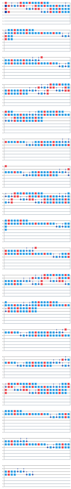
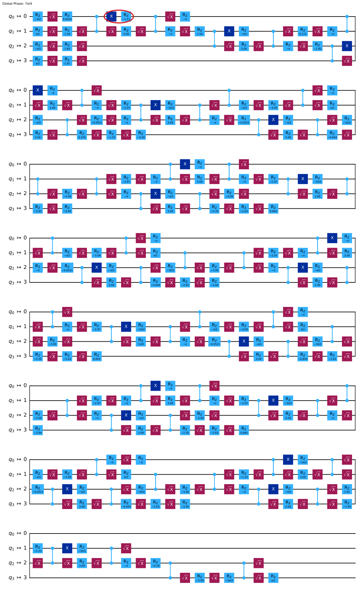
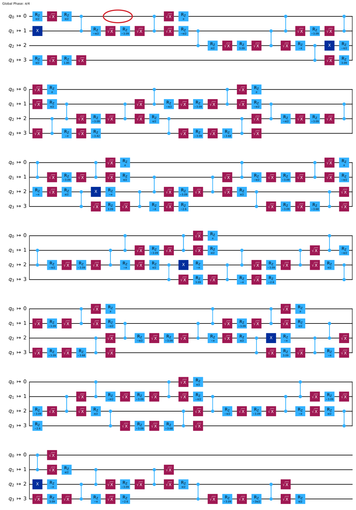
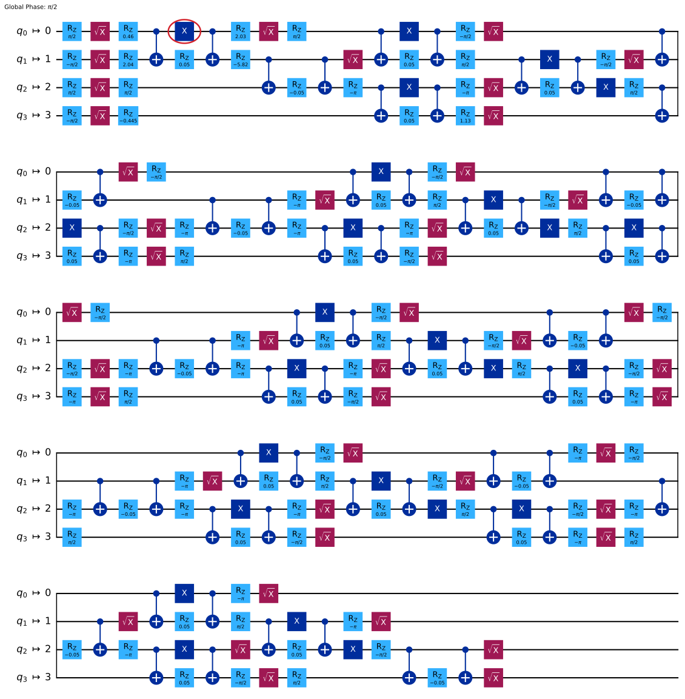
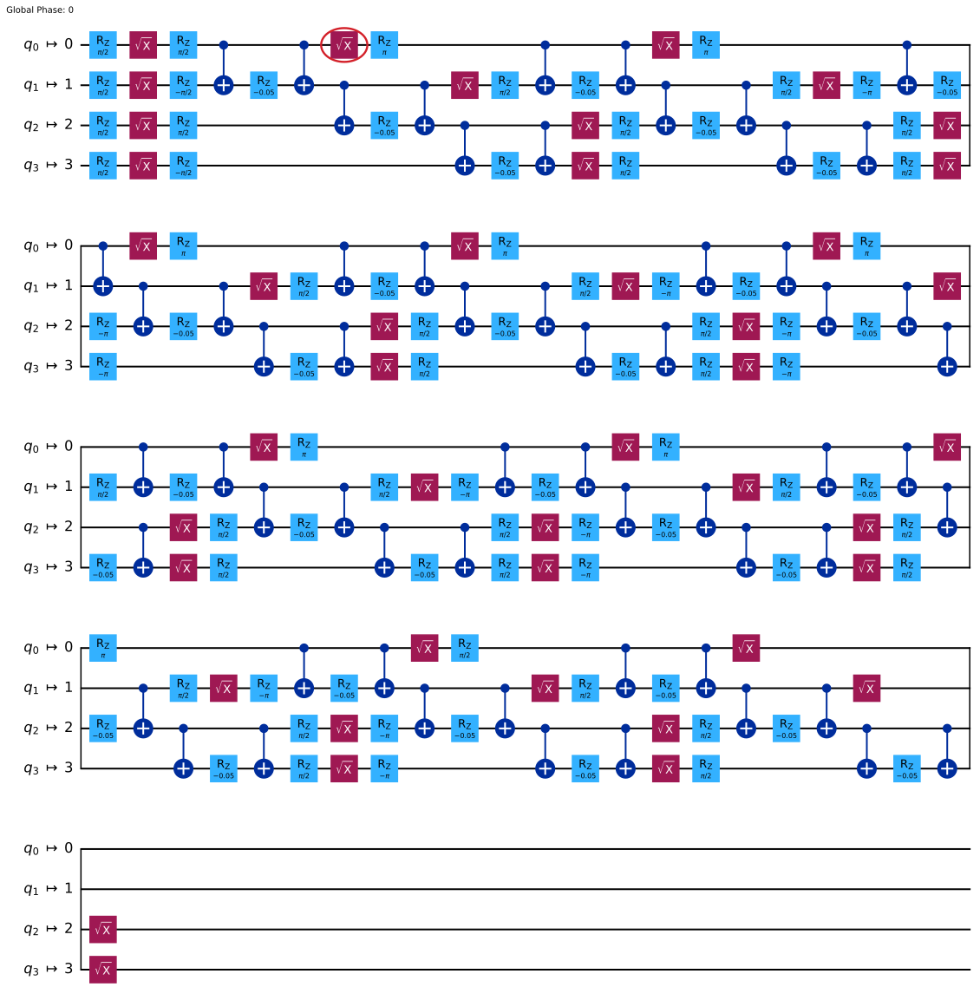
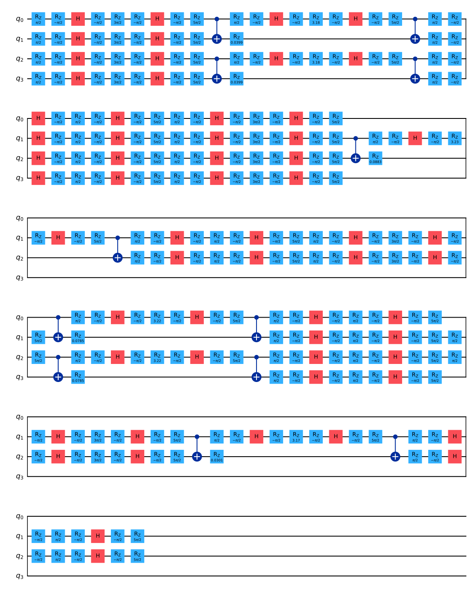
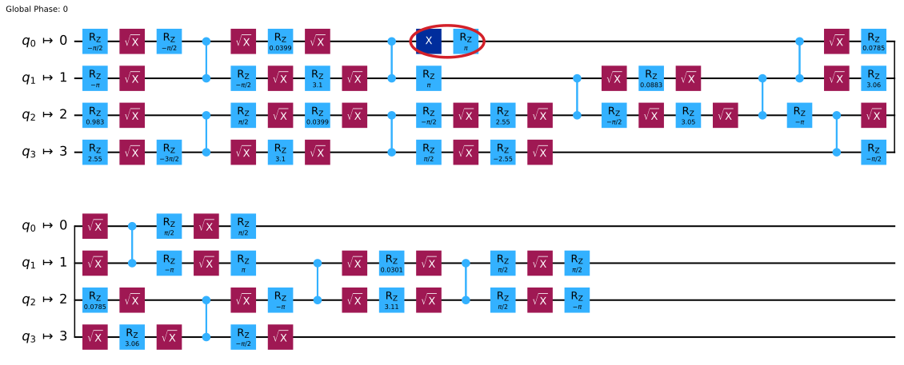
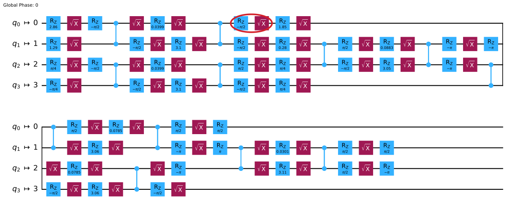
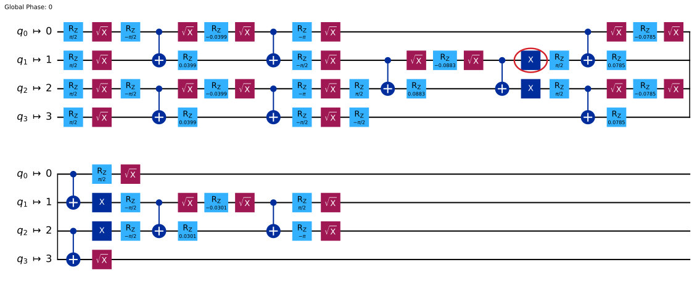
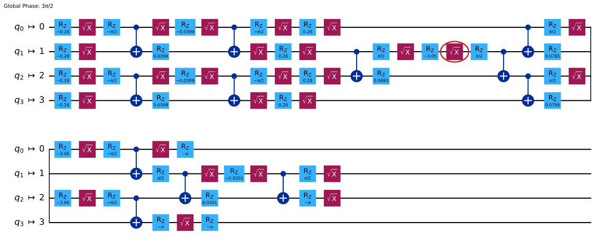

Heisenberg vs. XY
These four-qubit spin-model circuits take opposite paths on every tested seed on Manila, Lima, Jakarta, and Marrakesh. Both start in Nam RZ, use hardware-independent Qiskit Level 3 for logical optimization, and compile both the original and optimized circuits at hardware Level 3.
Heisenberg · 5 steps
95 fewer native gates after the logical pass, compared with the baseline.
XY · 100 steps
11 more native gates after the logical pass, compared with the baseline.
| Backend | Heisenberg, 5 steps | XY, 100 steps |
|---|---|---|
| Manila | +39 +39, +39, +39, +39, +39 | -5 -5, -5, -5, -5, -5 |
| Lima | +39 +37, +37, +43, +39, +43 | -6 -6, -6, -6, -6, -6 |
| Jakarta | +62 +62, +62, +66, +62, +66 | -4 -4, -4, -4, -4, -4 |
| Marrakesh | +95 +95, +95, +95, +95, +95 | -11 -11, -11, -11, -11, -11 |
Positive values mean the optimized path uses fewer native gates. Both circuits lose logical gates, but only Heisenberg carries those savings through to the hardware. On all four backends the final two-qubit gate counts and routing SWAP counts are unchanged within each pair, so the differences in the table come from single-qubit gates.
Qiskit circuit renderings
Expand a path to see the complete compiled circuit drawn with Qiskit’s Matplotlib output. Compiled drawings use seed 0 and physical sites 0–3. Red circles mark a representative difference in the single-qubit gate sequence on the same wire. Scroll either diagram horizontally to inspect the gates.
heisenberg_step_5_4
Original Nam RZ circuit · 737 gates

OpenQASM source
OPENQASM 2.0; include "qelib1.inc"; qreg q[4]; creg c[4]; h q[0]; x q[1]; h q[1]; cx q[0],q[1]; rz(-0.05) q[1]; cx q[0],q[1]; h q[0]; rz(pi/2) q[0]; rz(-pi/2) q[0]; h q[0]; rz(-pi/2) q[0]; rz(pi/2) q[0]; rz(-pi/2) q[0]; h q[0]; rz(-pi/2) q[0]; rz(5*pi/2) q[0]; h q[1]; h q[1]; h q[2]; cx q[1],q[2]; rz(-0.05) q[2]; cx q[1],q[2]; h q[1]; rz(pi/2) q[1]; rz(-pi/2) q[1]; h q[1]; rz(-pi/2) q[1]; rz(pi/2) q[1]; rz(-pi/2) q[1]; h q[1]; rz(-pi/2) q[1]; rz(5*pi/2) q[1]; cx q[0],q[1]; rz(-0.05) q[1]; cx q[0],q[1]; rz(pi/2) q[0]; rz(-pi/2) q[0]; h q[0]; rz(-pi/2) q[0]; rz(3*pi/2) q[0]; rz(-pi/2) q[0]; h q[0]; rz(-pi/2) q[0]; rz(5*pi/2) q[0]; rz(pi/2) q[1]; rz(-pi/2) q[1]; h q[1]; rz(-pi/2) q[1]; rz(3*pi/2) q[1]; rz(-pi/2) q[1]; h q[1]; rz(-pi/2) q[1]; rz(5*pi/2) q[1]; rz(pi/2) q[1]; rz(-pi/2) q[1]; h q[1]; rz(-pi/2) q[1]; rz(pi/2) q[1]; rz(-pi/2) q[1]; h q[1]; rz(-pi/2) q[1]; rz(5*pi/2) q[1]; h q[2]; h q[2]; x q[3]; h q[3]; cx q[2],q[3]; rz(-0.05) q[3]; cx q[2],q[3]; h q[2]; rz(pi/2) q[2]; rz(-pi/2) q[2]; h q[2]; rz(-pi/2) q[2]; rz(pi/2) q[2]; rz(-pi/2) q[2]; h q[2]; rz(-pi/2) q[2]; rz(5*pi/2) q[2]; cx q[1],q[2]; rz(-0.05) q[2]; cx q[1],q[2]; rz(pi/2) q[1]; rz(-pi/2) q[1]; h q[1]; rz(-pi/2) q[1]; rz(3*pi/2) q[1]; rz(-pi/2) q[1]; h q[1]; rz(-pi/2) q[1]; rz(5*pi/2) q[1]; cx q[0],q[1]; rz(0) q[1]; cx q[0],q[1]; h q[0]; rz(pi/2) q[2]; rz(-pi/2) q[2]; h q[2]; rz(-pi/2) q[2]; rz(3*pi/2) q[2]; rz(-pi/2) q[2]; h q[2]; rz(-pi/2) q[2]; rz(5*pi/2) q[2]; rz(pi/2) q[2]; rz(-pi/2) q[2]; h q[2]; rz(-pi/2) q[2]; rz(pi/2) q[2]; rz(-pi/2) q[2]; h q[2]; rz(-pi/2) q[2]; rz(5*pi/2) q[2]; h q[3]; rz(pi/2) q[3]; rz(-pi/2) q[3]; h q[3]; rz(-pi/2) q[3]; rz(pi/2) q[3]; rz(-pi/2) q[3]; h q[3]; rz(-pi/2) q[3]; rz(5*pi/2) q[3]; cx q[2],q[3]; rz(-0.05) q[3]; cx q[2],q[3]; rz(pi/2) q[2]; rz(-pi/2) q[2]; h q[2]; rz(-pi/2) q[2]; rz(3*pi/2) q[2]; rz(-pi/2) q[2]; h q[2]; rz(-pi/2) q[2]; rz(5*pi/2) q[2]; cx q[1],q[2]; rz(0) q[2]; cx q[1],q[2]; h q[1]; cx q[0],q[1]; rz(-0.05) q[1]; cx q[0],q[1]; h q[0]; rz(pi/2) q[0]; rz(-pi/2) q[0]; h q[0]; rz(-pi/2) q[0]; rz(pi/2) q[0]; rz(-pi/2) q[0]; h q[0]; rz(-pi/2) q[0]; rz(5*pi/2) q[0]; h q[1]; h q[1]; rz(pi/2) q[3]; rz(-pi/2) q[3]; h q[3]; rz(-pi/2) q[3]; rz(3*pi/2) q[3]; rz(-pi/2) q[3]; h q[3]; rz(-pi/2) q[3]; rz(5*pi/2) q[3]; cx q[2],q[3]; rz(0) q[3]; cx q[2],q[3]; h q[2]; cx q[1],q[2]; rz(-0.05) q[2]; cx q[1],q[2]; h q[1]; rz(pi/2) q[1]; rz(-pi/2) q[1]; h q[1]; rz(-pi/2) q[1]; rz(pi/2) q[1]; rz(-pi/2) q[1]; h q[1]; rz(-pi/2) q[1]; rz(5*pi/2) q[1]; cx q[0],q[1]; rz(-0.05) q[1]; cx q[0],q[1]; rz(pi/2) q[0]; rz(-pi/2) q[0]; h q[0]; rz(-pi/2) q[0]; rz(3*pi/2) q[0]; rz(-pi/2) q[0]; h q[0]; rz(-pi/2) q[0]; rz(5*pi/2) q[0]; rz(pi/2) q[1]; rz(-pi/2) q[1]; h q[1]; rz(-pi/2) q[1]; rz(3*pi/2) q[1]; rz(-pi/2) q[1]; h q[1]; rz(-pi/2) q[1]; rz(5*pi/2) q[1]; rz(pi/2) q[1]; rz(-pi/2) q[1]; h q[1]; rz(-pi/2) q[1]; rz(pi/2) q[1]; rz(-pi/2) q[1]; h q[1]; rz(-pi/2) q[1]; rz(5*pi/2) q[1]; h q[2]; h q[2]; h q[3]; cx q[2],q[3]; rz(-0.05) q[3]; cx q[2],q[3]; h q[2]; rz(pi/2) q[2]; rz(-pi/2) q[2]; h q[2]; rz(-pi/2) q[2]; rz(pi/2) q[2]; rz(-pi/2) q[2]; h q[2]; rz(-pi/2) q[2]; rz(5*pi/2) q[2]; cx q[1],q[2]; rz(-0.05) q[2]; cx q[1],q[2]; rz(pi/2) q[1]; rz(-pi/2) q[1]; h q[1]; rz(-pi/2) q[1]; rz(3*pi/2) q[1]; rz(-pi/2) q[1]; h q[1]; rz(-pi/2) q[1]; rz(5*pi/2) q[1]; cx q[0],q[1]; rz(0) q[1]; cx q[0],q[1]; h q[0]; rz(pi/2) q[2]; rz(-pi/2) q[2]; h q[2]; rz(-pi/2) q[2]; rz(3*pi/2) q[2]; rz(-pi/2) q[2]; h q[2]; rz(-pi/2) q[2]; rz(5*pi/2) q[2]; rz(pi/2) q[2]; rz(-pi/2) q[2]; h q[2]; rz(-pi/2) q[2]; rz(pi/2) q[2]; rz(-pi/2) q[2]; h q[2]; rz(-pi/2) q[2]; rz(5*pi/2) q[2]; h q[3]; rz(pi/2) q[3]; rz(-pi/2) q[3]; h q[3]; rz(-pi/2) q[3]; rz(pi/2) q[3]; rz(-pi/2) q[3]; h q[3]; rz(-pi/2) q[3]; rz(5*pi/2) q[3]; cx q[2],q[3]; rz(-0.05) q[3]; cx q[2],q[3]; rz(pi/2) q[2]; rz(-pi/2) q[2]; h q[2]; rz(-pi/2) q[2]; rz(3*pi/2) q[2]; rz(-pi/2) q[2]; h q[2]; rz(-pi/2) q[2]; rz(5*pi/2) q[2]; cx q[1],q[2]; rz(0) q[2]; cx q[1],q[2]; h q[1]; cx q[0],q[1]; rz(-0.05) q[1]; cx q[0],q[1]; h q[0]; rz(pi/2) q[0]; rz(-pi/2) q[0]; h q[0]; rz(-pi/2) q[0]; rz(pi/2) q[0]; rz(-pi/2) q[0]; h q[0]; rz(-pi/2) q[0]; rz(5*pi/2) q[0]; h q[1]; h q[1]; rz(pi/2) q[3]; rz(-pi/2) q[3]; h q[3]; rz(-pi/2) q[3]; rz(3*pi/2) q[3]; rz(-pi/2) q[3]; h q[3]; rz(-pi/2) q[3]; rz(5*pi/2) q[3]; cx q[2],q[3]; rz(0) q[3]; cx q[2],q[3]; h q[2]; cx q[1],q[2]; rz(-0.05) q[2]; cx q[1],q[2]; h q[1]; rz(pi/2) q[1]; rz(-pi/2) q[1]; h q[1]; rz(-pi/2) q[1]; rz(pi/2) q[1]; rz(-pi/2) q[1]; h q[1]; rz(-pi/2) q[1]; rz(5*pi/2) q[1]; cx q[0],q[1]; rz(-0.05) q[1]; cx q[0],q[1]; rz(pi/2) q[0]; rz(-pi/2) q[0]; h q[0]; rz(-pi/2) q[0]; rz(3*pi/2) q[0]; rz(-pi/2) q[0]; h q[0]; rz(-pi/2) q[0]; rz(5*pi/2) q[0]; rz(pi/2) q[1]; rz(-pi/2) q[1]; h q[1]; rz(-pi/2) q[1]; rz(3*pi/2) q[1]; rz(-pi/2) q[1]; h q[1]; rz(-pi/2) q[1]; rz(5*pi/2) q[1]; rz(pi/2) q[1]; rz(-pi/2) q[1]; h q[1]; rz(-pi/2) q[1]; rz(pi/2) q[1]; rz(-pi/2) q[1]; h q[1]; rz(-pi/2) q[1]; rz(5*pi/2) q[1]; h q[2]; h q[2]; h q[3]; cx q[2],q[3]; rz(-0.05) q[3]; cx q[2],q[3]; h q[2]; rz(pi/2) q[2]; rz(-pi/2) q[2]; h q[2]; rz(-pi/2) q[2]; rz(pi/2) q[2]; rz(-pi/2) q[2]; h q[2]; rz(-pi/2) q[2]; rz(5*pi/2) q[2]; cx q[1],q[2]; rz(-0.05) q[2]; cx q[1],q[2]; rz(pi/2) q[1]; rz(-pi/2) q[1]; h q[1]; rz(-pi/2) q[1]; rz(3*pi/2) q[1]; rz(-pi/2) q[1]; h q[1]; rz(-pi/2) q[1]; rz(5*pi/2) q[1]; cx q[0],q[1]; rz(0) q[1]; cx q[0],q[1]; h q[0]; rz(pi/2) q[2]; rz(-pi/2) q[2]; h q[2]; rz(-pi/2) q[2]; rz(3*pi/2) q[2]; rz(-pi/2) q[2]; h q[2]; rz(-pi/2) q[2]; rz(5*pi/2) q[2]; rz(pi/2) q[2]; rz(-pi/2) q[2]; h q[2]; rz(-pi/2) q[2]; rz(pi/2) q[2]; rz(-pi/2) q[2]; h q[2]; rz(-pi/2) q[2]; rz(5*pi/2) q[2]; h q[3]; rz(pi/2) q[3]; rz(-pi/2) q[3]; h q[3]; rz(-pi/2) q[3]; rz(pi/2) q[3]; rz(-pi/2) q[3]; h q[3]; rz(-pi/2) q[3]; rz(5*pi/2) q[3]; cx q[2],q[3]; rz(-0.05) q[3]; cx q[2],q[3]; rz(pi/2) q[2]; rz(-pi/2) q[2]; h q[2]; rz(-pi/2) q[2]; rz(3*pi/2) q[2]; rz(-pi/2) q[2]; h q[2]; rz(-pi/2) q[2]; rz(5*pi/2) q[2]; cx q[1],q[2]; rz(0) q[2]; cx q[1],q[2]; h q[1]; cx q[0],q[1]; rz(-0.05) q[1]; cx q[0],q[1]; h q[0]; rz(pi/2) q[0]; rz(-pi/2) q[0]; h q[0]; rz(-pi/2) q[0]; rz(pi/2) q[0]; rz(-pi/2) q[0]; h q[0]; rz(-pi/2) q[0]; rz(5*pi/2) q[0]; h q[1]; h q[1]; rz(pi/2) q[3]; rz(-pi/2) q[3]; h q[3]; rz(-pi/2) q[3]; rz(3*pi/2) q[3]; rz(-pi/2) q[3]; h q[3]; rz(-pi/2) q[3]; rz(5*pi/2) q[3]; cx q[2],q[3]; rz(0) q[3]; cx q[2],q[3]; h q[2]; cx q[1],q[2]; rz(-0.05) q[2]; cx q[1],q[2]; h q[1]; rz(pi/2) q[1]; rz(-pi/2) q[1]; h q[1]; rz(-pi/2) q[1]; rz(pi/2) q[1]; rz(-pi/2) q[1]; h q[1]; rz(-pi/2) q[1]; rz(5*pi/2) q[1]; cx q[0],q[1]; rz(-0.05) q[1]; cx q[0],q[1]; rz(pi/2) q[0]; rz(-pi/2) q[0]; h q[0]; rz(-pi/2) q[0]; rz(3*pi/2) q[0]; rz(-pi/2) q[0]; h q[0]; rz(-pi/2) q[0]; rz(5*pi/2) q[0]; rz(pi/2) q[1]; rz(-pi/2) q[1]; h q[1]; rz(-pi/2) q[1]; rz(3*pi/2) q[1]; rz(-pi/2) q[1]; h q[1]; rz(-pi/2) q[1]; rz(5*pi/2) q[1]; rz(pi/2) q[1]; rz(-pi/2) q[1]; h q[1]; rz(-pi/2) q[1]; rz(pi/2) q[1]; rz(-pi/2) q[1]; h q[1]; rz(-pi/2) q[1]; rz(5*pi/2) q[1]; h q[2]; h q[2]; h q[3]; cx q[2],q[3]; rz(-0.05) q[3]; cx q[2],q[3]; h q[2]; rz(pi/2) q[2]; rz(-pi/2) q[2]; h q[2]; rz(-pi/2) q[2]; rz(pi/2) q[2]; rz(-pi/2) q[2]; h q[2]; rz(-pi/2) q[2]; rz(5*pi/2) q[2]; cx q[1],q[2]; rz(-0.05) q[2]; cx q[1],q[2]; rz(pi/2) q[1]; rz(-pi/2) q[1]; h q[1]; rz(-pi/2) q[1]; rz(3*pi/2) q[1]; rz(-pi/2) q[1]; h q[1]; rz(-pi/2) q[1]; rz(5*pi/2) q[1]; cx q[0],q[1]; rz(0) q[1]; cx q[0],q[1]; h q[0]; rz(pi/2) q[2]; rz(-pi/2) q[2]; h q[2]; rz(-pi/2) q[2]; rz(3*pi/2) q[2]; rz(-pi/2) q[2]; h q[2]; rz(-pi/2) q[2]; rz(5*pi/2) q[2]; rz(pi/2) q[2]; rz(-pi/2) q[2]; h q[2]; rz(-pi/2) q[2]; rz(pi/2) q[2]; rz(-pi/2) q[2]; h q[2]; rz(-pi/2) q[2]; rz(5*pi/2) q[2]; h q[3]; rz(pi/2) q[3]; rz(-pi/2) q[3]; h q[3]; rz(-pi/2) q[3]; rz(pi/2) q[3]; rz(-pi/2) q[3]; h q[3]; rz(-pi/2) q[3]; rz(5*pi/2) q[3]; cx q[2],q[3]; rz(-0.05) q[3]; cx q[2],q[3]; rz(pi/2) q[2]; rz(-pi/2) q[2]; h q[2]; rz(-pi/2) q[2]; rz(3*pi/2) q[2]; rz(-pi/2) q[2]; h q[2]; rz(-pi/2) q[2]; rz(5*pi/2) q[2]; cx q[1],q[2]; rz(0) q[2]; cx q[1],q[2]; h q[1]; cx q[0],q[1]; rz(-0.05) q[1]; cx q[0],q[1]; h q[0]; rz(pi/2) q[0]; rz(-pi/2) q[0]; h q[0]; rz(-pi/2) q[0]; rz(pi/2) q[0]; rz(-pi/2) q[0]; h q[0]; rz(-pi/2) q[0]; rz(5*pi/2) q[0]; h q[1]; h q[1]; rz(pi/2) q[3]; rz(-pi/2) q[3]; h q[3]; rz(-pi/2) q[3]; rz(3*pi/2) q[3]; rz(-pi/2) q[3]; h q[3]; rz(-pi/2) q[3]; rz(5*pi/2) q[3]; cx q[2],q[3]; rz(0) q[3]; cx q[2],q[3]; h q[2]; cx q[1],q[2]; rz(-0.05) q[2]; cx q[1],q[2]; h q[1]; rz(pi/2) q[1]; rz(-pi/2) q[1]; h q[1]; rz(-pi/2) q[1]; rz(pi/2) q[1]; rz(-pi/2) q[1]; h q[1]; rz(-pi/2) q[1]; rz(5*pi/2) q[1]; cx q[0],q[1]; rz(-0.05) q[1]; cx q[0],q[1]; rz(pi/2) q[0]; rz(-pi/2) q[0]; h q[0]; rz(-pi/2) q[0]; rz(3*pi/2) q[0]; rz(-pi/2) q[0]; h q[0]; rz(-pi/2) q[0]; rz(5*pi/2) q[0]; rz(pi/2) q[1]; rz(-pi/2) q[1]; h q[1]; rz(-pi/2) q[1]; rz(3*pi/2) q[1]; rz(-pi/2) q[1]; h q[1]; rz(-pi/2) q[1]; rz(5*pi/2) q[1]; rz(pi/2) q[1]; rz(-pi/2) q[1]; h q[1]; rz(-pi/2) q[1]; rz(pi/2) q[1]; rz(-pi/2) q[1]; h q[1]; rz(-pi/2) q[1]; rz(5*pi/2) q[1]; h q[2]; h q[2]; h q[3]; cx q[2],q[3]; rz(-0.05) q[3]; cx q[2],q[3]; h q[2]; rz(pi/2) q[2]; rz(-pi/2) q[2]; h q[2]; rz(-pi/2) q[2]; rz(pi/2) q[2]; rz(-pi/2) q[2]; h q[2]; rz(-pi/2) q[2]; rz(5*pi/2) q[2]; cx q[1],q[2]; rz(-0.05) q[2]; cx q[1],q[2]; rz(pi/2) q[1]; rz(-pi/2) q[1]; h q[1]; rz(-pi/2) q[1]; rz(3*pi/2) q[1]; rz(-pi/2) q[1]; h q[1]; rz(-pi/2) q[1]; rz(5*pi/2) q[1]; cx q[0],q[1]; rz(0) q[1]; cx q[0],q[1]; rz(pi/2) q[2]; rz(-pi/2) q[2]; h q[2]; rz(-pi/2) q[2]; rz(3*pi/2) q[2]; rz(-pi/2) q[2]; h q[2]; rz(-pi/2) q[2]; rz(5*pi/2) q[2]; rz(pi/2) q[2]; rz(-pi/2) q[2]; h q[2]; rz(-pi/2) q[2]; rz(pi/2) q[2]; rz(-pi/2) q[2]; h q[2]; rz(-pi/2) q[2]; rz(5*pi/2) q[2]; h q[3]; rz(pi/2) q[3]; rz(-pi/2) q[3]; h q[3]; rz(-pi/2) q[3]; rz(pi/2) q[3]; rz(-pi/2) q[3]; h q[3]; rz(-pi/2) q[3]; rz(5*pi/2) q[3]; cx q[2],q[3]; rz(-0.05) q[3]; cx q[2],q[3]; rz(pi/2) q[2]; rz(-pi/2) q[2]; h q[2]; rz(-pi/2) q[2]; rz(3*pi/2) q[2]; rz(-pi/2) q[2]; h q[2]; rz(-pi/2) q[2]; rz(5*pi/2) q[2]; cx q[1],q[2]; rz(0) q[2]; cx q[1],q[2]; rz(pi/2) q[3]; rz(-pi/2) q[3]; h q[3]; rz(-pi/2) q[3]; rz(3*pi/2) q[3]; rz(-pi/2) q[3]; h q[3]; rz(-pi/2) q[3]; rz(5*pi/2) q[3]; cx q[2],q[3]; rz(0) q[3]; cx q[2],q[3];
Logical Nam RZ gate count 737 → 172.
Marrakesh
Direct compilation · 372 gates · 60 CZ

After logical optimization · 277 gates · 60 CZ

Manila
Direct compilation · 229 gates · 60 CX

After logical optimization · 190 gates · 60 CX

XY_step_100_4
Original Nam RZ circuit · 288 gates

OpenQASM source
OPENQASM 2.0; include "qelib1.inc"; qreg q[4]; rz(pi/2) q[0]; rz(-pi/2) q[0]; h q[0]; rz(-pi/2) q[0]; rz(3*pi/2) q[0]; rz(-pi/2) q[0]; h q[0]; rz(-pi/2) q[0]; rz(5*pi/2) q[0]; rz(pi/2) q[1]; rz(-pi/2) q[1]; h q[1]; rz(-pi/2) q[1]; rz(3*pi/2) q[1]; rz(-pi/2) q[1]; h q[1]; rz(-pi/2) q[1]; rz(5*pi/2) q[1]; cx q[0],q[1]; rz(pi/2) q[0]; rz(-pi/2) q[0]; h q[0]; rz(-pi/2) q[0]; rz(3.181484879270819) q[0]; rz(-pi/2) q[0]; h q[0]; rz(-pi/2) q[0]; rz(5*pi/2) q[0]; rz(0.039892225681026) q[1]; cx q[0],q[1]; rz(pi/2) q[0]; rz(-pi/2) q[0]; h q[0]; rz(-pi/2) q[0]; rz(pi/2) q[0]; rz(-pi/2) q[0]; h q[0]; rz(-pi/2) q[0]; rz(5*pi/2) q[0]; rz(pi/2) q[0]; rz(-pi/2) q[0]; h q[0]; rz(-pi/2) q[0]; rz(3*pi/2) q[0]; rz(-pi/2) q[0]; h q[0]; rz(-pi/2) q[0]; rz(5*pi/2) q[0]; rz(pi/2) q[1]; rz(-pi/2) q[1]; h q[1]; rz(-pi/2) q[1]; rz(pi/2) q[1]; rz(-pi/2) q[1]; h q[1]; rz(-pi/2) q[1]; rz(5*pi/2) q[1]; rz(pi/2) q[1]; rz(-pi/2) q[1]; h q[1]; rz(-pi/2) q[1]; rz(3*pi/2) q[1]; rz(-pi/2) q[1]; h q[1]; rz(-pi/2) q[1]; rz(5*pi/2) q[1]; rz(pi/2) q[2]; rz(-pi/2) q[2]; h q[2]; rz(-pi/2) q[2]; rz(3*pi/2) q[2]; rz(-pi/2) q[2]; h q[2]; rz(-pi/2) q[2]; rz(5*pi/2) q[2]; rz(pi/2) q[3]; rz(-pi/2) q[3]; h q[3]; rz(-pi/2) q[3]; rz(3*pi/2) q[3]; rz(-pi/2) q[3]; h q[3]; rz(-pi/2) q[3]; rz(5*pi/2) q[3]; cx q[2],q[3]; rz(pi/2) q[2]; rz(-pi/2) q[2]; h q[2]; rz(-pi/2) q[2]; rz(3.181484879270819) q[2]; rz(-pi/2) q[2]; h q[2]; rz(-pi/2) q[2]; rz(5*pi/2) q[2]; rz(0.039892225681026) q[3]; cx q[2],q[3]; rz(pi/2) q[2]; rz(-pi/2) q[2]; h q[2]; rz(-pi/2) q[2]; rz(pi/2) q[2]; rz(-pi/2) q[2]; h q[2]; rz(-pi/2) q[2]; rz(5*pi/2) q[2]; rz(pi/2) q[2]; rz(-pi/2) q[2]; h q[2]; rz(-pi/2) q[2]; rz(3*pi/2) q[2]; rz(-pi/2) q[2]; h q[2]; rz(-pi/2) q[2]; rz(5*pi/2) q[2]; cx q[1],q[2]; rz(pi/2) q[1]; rz(-pi/2) q[1]; h q[1]; rz(-pi/2) q[1]; rz(3.229906433695835) q[1]; rz(-pi/2) q[1]; h q[1]; rz(-pi/2) q[1]; rz(5*pi/2) q[1]; rz(0.088313780106042) q[2]; cx q[1],q[2]; rz(pi/2) q[1]; rz(-pi/2) q[1]; h q[1]; rz(-pi/2) q[1]; rz(pi/2) q[1]; rz(-pi/2) q[1]; h q[1]; rz(-pi/2) q[1]; rz(5*pi/2) q[1]; rz(pi/2) q[1]; rz(-pi/2) q[1]; h q[1]; rz(-pi/2) q[1]; rz(3*pi/2) q[1]; rz(-pi/2) q[1]; h q[1]; rz(-pi/2) q[1]; rz(5*pi/2) q[1]; cx q[0],q[1]; rz(pi/2) q[0]; rz(-pi/2) q[0]; h q[0]; rz(-pi/2) q[0]; rz(3.220124289756725) q[0]; rz(-pi/2) q[0]; h q[0]; rz(-pi/2) q[0]; rz(5*pi/2) q[0]; rz(0.078531636166932) q[1]; cx q[0],q[1]; rz(pi/2) q[0]; rz(-pi/2) q[0]; h q[0]; rz(-pi/2) q[0]; rz(pi/2) q[0]; rz(-pi/2) q[0]; h q[0]; rz(-pi/2) q[0]; rz(5*pi/2) q[0]; rz(pi/2) q[1]; rz(-pi/2) q[1]; h q[1]; rz(-pi/2) q[1]; rz(pi/2) q[1]; rz(-pi/2) q[1]; h q[1]; rz(-pi/2) q[1]; rz(5*pi/2) q[1]; rz(pi/2) q[1]; rz(-pi/2) q[1]; h q[1]; rz(-pi/2) q[1]; rz(3*pi/2) q[1]; rz(-pi/2) q[1]; h q[1]; rz(-pi/2) q[1]; rz(5*pi/2) q[1]; rz(pi/2) q[2]; rz(-pi/2) q[2]; h q[2]; rz(-pi/2) q[2]; rz(pi/2) q[2]; rz(-pi/2) q[2]; h q[2]; rz(-pi/2) q[2]; rz(5*pi/2) q[2]; rz(pi/2) q[2]; rz(-pi/2) q[2]; h q[2]; rz(-pi/2) q[2]; rz(3*pi/2) q[2]; rz(-pi/2) q[2]; h q[2]; rz(-pi/2) q[2]; rz(5*pi/2) q[2]; rz(pi/2) q[3]; rz(-pi/2) q[3]; h q[3]; rz(-pi/2) q[3]; rz(pi/2) q[3]; rz(-pi/2) q[3]; h q[3]; rz(-pi/2) q[3]; rz(5*pi/2) q[3]; rz(pi/2) q[3]; rz(-pi/2) q[3]; h q[3]; rz(-pi/2) q[3]; rz(3*pi/2) q[3]; rz(-pi/2) q[3]; h q[3]; rz(-pi/2) q[3]; rz(5*pi/2) q[3]; cx q[2],q[3]; rz(pi/2) q[2]; rz(-pi/2) q[2]; h q[2]; rz(-pi/2) q[2]; rz(3.220124289756725) q[2]; rz(-pi/2) q[2]; h q[2]; rz(-pi/2) q[2]; rz(5*pi/2) q[2]; rz(0.078531636166932) q[3]; cx q[2],q[3]; rz(pi/2) q[2]; rz(-pi/2) q[2]; h q[2]; rz(-pi/2) q[2]; rz(pi/2) q[2]; rz(-pi/2) q[2]; h q[2]; rz(-pi/2) q[2]; rz(5*pi/2) q[2]; rz(pi/2) q[2]; rz(-pi/2) q[2]; h q[2]; rz(-pi/2) q[2]; rz(3*pi/2) q[2]; rz(-pi/2) q[2]; h q[2]; rz(-pi/2) q[2]; rz(5*pi/2) q[2]; cx q[1],q[2]; rz(pi/2) q[1]; rz(-pi/2) q[1]; h q[1]; rz(-pi/2) q[1]; rz(3.171668673483751) q[1]; rz(-pi/2) q[1]; h q[1]; rz(-pi/2) q[1]; rz(5*pi/2) q[1]; rz(0.030076019893958) q[2]; cx q[1],q[2]; rz(pi/2) q[1]; rz(-pi/2) q[1]; h q[1]; rz(-pi/2) q[1]; rz(pi/2) q[1]; rz(-pi/2) q[1]; h q[1]; rz(-pi/2) q[1]; rz(5*pi/2) q[1]; rz(pi/2) q[2]; rz(-pi/2) q[2]; h q[2]; rz(-pi/2) q[2]; rz(pi/2) q[2]; rz(-pi/2) q[2]; h q[2]; rz(-pi/2) q[2]; rz(5*pi/2) q[2]; rz(pi/2) q[3]; rz(-pi/2) q[3]; h q[3]; rz(-pi/2) q[3]; rz(pi/2) q[3]; rz(-pi/2) q[3]; h q[3]; rz(-pi/2) q[3]; rz(5*pi/2) q[3];
Logical Nam RZ gate count 288 → 96.
Marrakesh
Direct compilation · 90 gates · 12 CZ

After logical optimization · 101 gates · 12 CZ

Manila
Direct compilation · 71 gates · 12 CX

After logical optimization · 76 gates · 12 CX
